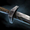

is better for burst damage, but
not necessarily for sustain as the CC from often ends up cancelling out more damage than what Big Boomer
could heal for.
Variants
offers better sustain in
general, but worse cleansing and combat mobility.
Equipment

9
Superior Sigil of Intelligence
Your next three
attacks after swapping to this weapon while in combat has a 100%
critical chance. (Cooldown: 9s)
9
Superior Sigil of Energy
Gain 50% of your
endurance when you swap to this weapon while in combat.
(Cooldown: 9s)
Superior Rune
of the Revenant
(1): +8 to All
Stats(2): +10 to All
Stats(3): +12 to All
Stats(4): +14 to All
Stats(5): +16 to All
Stats(6): Gain 2 seconds
of resistance when you use a heal skill. (Cooldown: 10 seconds)
Berserker Amulet
+1200 Power+900 Precision+900 Ferocity
Equipment Changes
Rune
- more frequently seen on Mortar Kit
builds, allowing players to proc long duration Resistance every 20 seconds.
Usage
Elite specialization basics
Holosmith grants access to the Photon Forge (sometimes referred to as holo mode) and introduces a new
resource: heat. Heat is generated passively while the forge is active and also by activating forge
skills. Higher CD skills generate more heat.
Reaching maximum heat (150) should be avoided as Overheating
damages you and locks you out of the forge until heat goes back to 0. This build doesn't really have access
to proper heat management, which means you'll have to rely on your utility and elite kits to pass the time
while the forge is cooling down.
is used to activate the forge, after which
your weapon skills will be replaced by 5 new ones. You can't exit the forge for at least 6 seconds, so be
careful about reentering with high heat levels. Try not to reenter it above ~50-70 heat else you may risk
overheating.
Both Engage Photon Forge and Disengage Photon Forge count as toolbelt skills and will work with
related traits. Both skills can proc weapon swap sigils too.
If absolutely necessary you can abort Photon Forge by using .
Forge skills
Although the auto attack chain got significant nerfs in March 2018, it can still do considerable cleave
damage especially with Quickness.
should be used on CD most of the time as
this is an incredibly loaded skill with a very short CD. This skill provides mobility/cleansing via , does decent damage, and even
functions as a Leap Finisher (although the default build doesn't really have combo fields, variants or your
allies may do).
tends to be the first skill Holosmiths use
in combat right after entering holo mode. This is a two-parter that also stacks Might. The second
strike goes off after a delay, making it ideal to combo with other skills for burst damage. Try to squeeze
in 2 Corona Bursts before exiting the form.
can be useful for reaching targets trying
to escape, otherwise it should only be used if you can make sure that all of its projectiles are going to
land (for example if the target is CC'd).
is an excellent AoE CC and also a Blast
Finisher. You can also fake cast it by stowing your weapon right after activation in order to bait enemy
dodges.
General
The build has rather poor access to condition removal, limited only to a few holo traits. When you're under
heavy condition pressure always try to get a in before leaving the forge, increasing the chance of removing
damaging conditions with .
Against condition burst 's immunity
can bail you out.
has both defensive and offensive uses. You
could either hold on to it to break out of stuns, or burst targets with Quickness
is the go-to panic button in the build,
making you immortal for the time being (well, except for fall damage). Beside just avoiding cerain death,
this elixir's also useful for stomping enemies or reviving allies without any risk of interrupts.
is the only source of Stealth in
the build, and it's AoE. There are plenty of situations where stealth can be a powerful thing to
have. These include hiding allies who are being stomped thus saving them, removing pressure from
yourself by turning invisible, or concealing your movement before an engagement to catch enemies
off-guard.
is a bit RNG but both forms are fairly
versatile. Whether you need to get away from a fight, have to interrupt something, or want to do some extra
damage, you can't go wrong with this skill (although Rampage has far better damage, even after the nerfs):
is fairly simple, you want to use
skill 5 and skill 4 right away. If all you want to do
is a quick interrupt or a decap you may consider exiting the form after just these two skills (even
in the middle of Dust Charge in order to stay on the node). You could also just keep going and toss
enemies around, taking pressure off of your team. The first 3 skills are used to adapt Tornado to
the given situation - you can choose between doing damage, mitigating damage via Blind, and
hard-CC.
can do some massive damage through
the auto chain and . Dash is
also great for mobility in general. All the other skills on the set are strong CC effects with next
to no damage.
is a popular opener in Rampage,
allowing you to CC targets from range and then either follow up with for burst damage or to keep the CC chain rolling.
Damage
The more heat you have, the more damage you do thanks to and .
is the best burst skill in the
build and should be used while your heat is high. Being a toolbelt skill, this can be used while the
forge is active. Using it in melee range is optimal as it reduces counterplay (opponent won't have
time to react to the projectiles).
After every dodge roll you gain which adds
a decent damage proc to your next attack.
While the forge is cooling down focus on spamming skills as filler.
Right after exiting the forge follow up with and while your heat is still high, preferably
in this order (Radiant Arc is a leap which makes it easier to land Refraction Cutter in melee range which
increases the chance of landing all projectiles on one target).
Once your heat is back at a reasonably low level enter holo mode and spam those skills, that's really all
there is to it.
Mobility
Keep spamming while moving between capture points, but
don't overheat.
If you're not going to need your healing skill in the immediate future you could sacrifice it for some Swiftness while
the forge is cooling down.